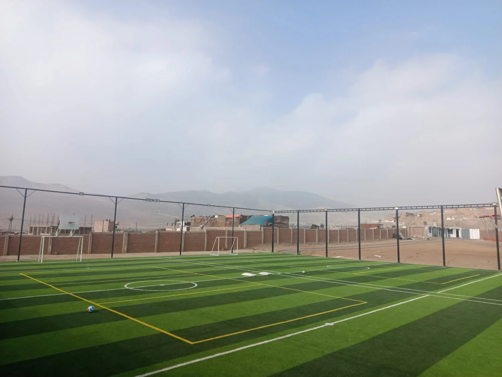

Proyectos de AVILORETO
Centro Recreacional
Un espacio para el deporte, la recreación, la convivencia y las actividades de nuestra comunidad.
Conoce sus espacios
Presentación
Un espacio para encontrarnos
El Centro Recreacional es un espacio de AVILORETO destinado a actividades deportivas, recreativas y administrativas. El recinto ya cuenta con canchas sintéticas y oficinas administrativas, y continúa desarrollándose progresivamente con nuevas áreas.
El centro ocupa un área de 9,000 m² y cuenta con cerco perimétrico, cuya inversión superó los S/ 3 millones.
La asociación impulsa la implementación de sus espacios para aportar al bienestar de los propietarios, sus familias y la comunidad.

Deporte y recreación
Canchas para compartir y hacer deporte
Las canchas deportivas están disponibles para asociados, vecinos y visitantes. Para consultar disponibilidad y coordinar una reserva, comunícate con la asociación.
Consultar disponibilidad
Infraestructura comunitaria
Local Multiusos
El Local Multiusos está destinado a asambleas y eventos como matrimonios, bautizos, conferencias, seminarios y otras actividades de la comunidad. También puede servir como espacio de velatorio para los asociados.
La asociación cuenta con registros fotográficos de la obra y de la colocación de la primera piedra. Las imágenes muestran el desarrollo de este espacio dentro del Centro Recreacional.

Registro de obra
Materiales y avances de construcción
Fotografías de materiales, cimentación y levantamiento de muros en las obras del Centro Recreacional.
Registro de obra
La primera piedra del Local Multiusos
Fotografías del acto que marcó el inicio de la edificación del Local Multiusos en el Centro Recreacional.


Conoce más
Espacios para una comunidad activa
Comunícate con AVILORETO para consultar sobre sus instalaciones.